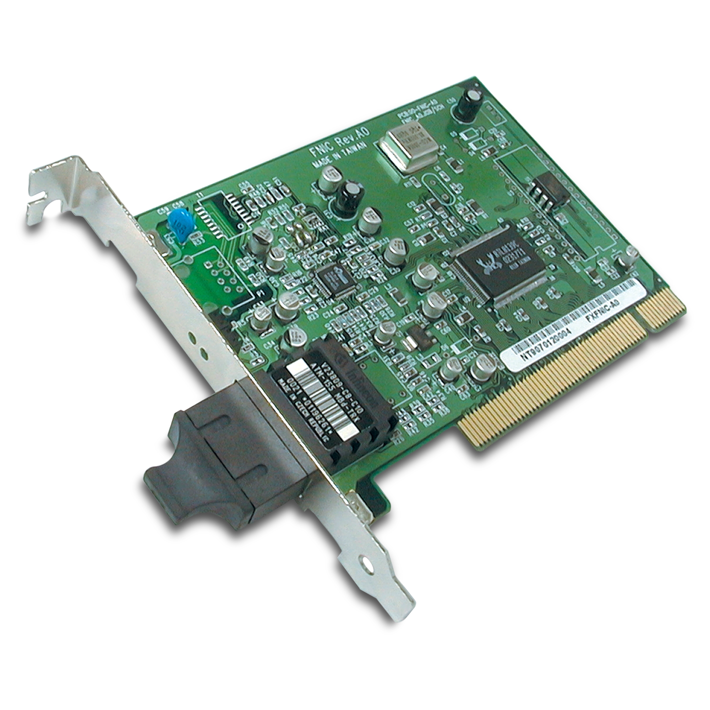

TARJETAS DE RED
¿Necesitas una red que haga más que simplemente conectar dispositivos? ¡Las tarjetas de red de servidor están aquí para revolucionar tu infraestructura!
VLAN (Virtual LAN):
¿Quieres segmentar tu red para mejorar la seguridad y el rendimiento? Con VLAN, puedes crear redes virtuales independientes dentro de una misma infraestructura física. ¡Ideal para separar departamentos, proyectos o servicios críticos!
QoS (Quality of Service):
¿Prioridad para lo que realmente importa? Con QoS, puedes garantizar que el tráfico crítico (como videollamadas, transferencias de archivos grandes o aplicaciones en tiempo real) siempre tenga preferencia, evitando cuellos de botella y mejorando la experiencia de usuario.
Offloading de tareas de red:
¿Tu servidor está sobrecargado? Estas tarjetas descargan tareas como el procesamiento de TCP/IP o el cifrado directamente en el hardware de la tarjeta, liberando recursos valiosos del CPU y mejorando el rendimiento general del sistema.
SDN (Software-Defined Networking):
¿Flexibilidad y escalabilidad? Con soporte para SDN, puedes gestionar y configurar tu red de manera dinámica y centralizada, adaptándola a las necesidades cambiantes de tu negocio sin complicaciones.
RDMA (Remote Direct Memory Access):
¿Baja latencia y alto rendimiento? RDMA permite transferencias de datos ultrarrápidas entre servidores, perfecto para entornos de virtualización, big data o almacenamiento en red de alta velocidad.
Productos:
|  |  |
Tarjeta de red de fibra optica 1: |
Tarjeta de red de fibra optica 2: |
|---|---|
Velocidad: 100Mbps |
Velocidad: 25Gbps |
Uso: Empresarial |
Uso: Empresarial |
Instalación: PCI |
Instalación: PCIe |
Información relevante de las tarjetas de fibra de Red:
Tipos de conexión:
Las tarjetetas de fibra optica de red suelen tener un conector universal donde luego se coloca un transciver que puede tener diferentes conexiones:
-
SC: Es el tipo de conector más barato, se ajusta a presión, es compacto y se usa habitualmente en redes FTTH conectando la ONT al PTRO de nuestro hogar. Es compatible con fibra monomodo y multimodo, tiene una pérdida de señal de en torno a 0,25dB.
-
LC: Es el tipo de conector más utilizado en los transceptores SFP de los switches profesionales, es de tipo push and pull, es muy compacto y permite mayor densidad de conectores en racks. Es compatible con fibra monomodo y multimodo y tiene una pérdida de señal de en torno a 0,10dB.
-
FC: Era muy usado hace años, pero ahora está cayendo en desuso a favor de los conectores SC y LC. Este conector se rosca y tiene una fijación resistente a vibraciones. Es compatible con fibra monomodo y tiene una pérdida de señal de en torno a 0,30dB.
-
ST: Ha sido utilizado en entornos profesionales y redes militares, se parece bastante al conector FC, pero su ajuste es similar al de un conector BNC. Se usa en fibras multimodo y la pérdida es de 0,25dB.
Velocidad de la fibra optica de red
La velocidad de la fibra optica de red se mide en Gbps, la velocidad varia entre 100Mbps y 100Gbps.
Uso principa de las tarjetas de fibra optica de red
Los usos de las tarjetas de fibra optica de red son muy extensos, desde uso domestico hasta uso empresarial, pero los usos más conocidos son:
-
Para servidores de alto rendimiento en centros de datos
-
Redes empresarial criticas
-
Redes troncales con mucho flujo de datos y que requieran mucha velocidad
Instalación:
La instalación de las tarjetas de fibra optica de red suelen requerir un puerto PCIe o también pueden ir soldadadas a la placa base de los servidores, que suele ser lo mas habitual.
Ventajas:
Las ventajas de las tarjetas de fibra optica de red son: velocidad extremadamente alta, transmisión confiable a largas distancias, dependiendo del tipo de fibra (monomodo o multimodo).
Desventajas:
Las desventajas de las tarjetas de fibra optica de red son: infraestructura costosa y compleja de implementar.